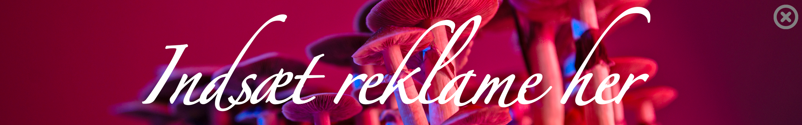
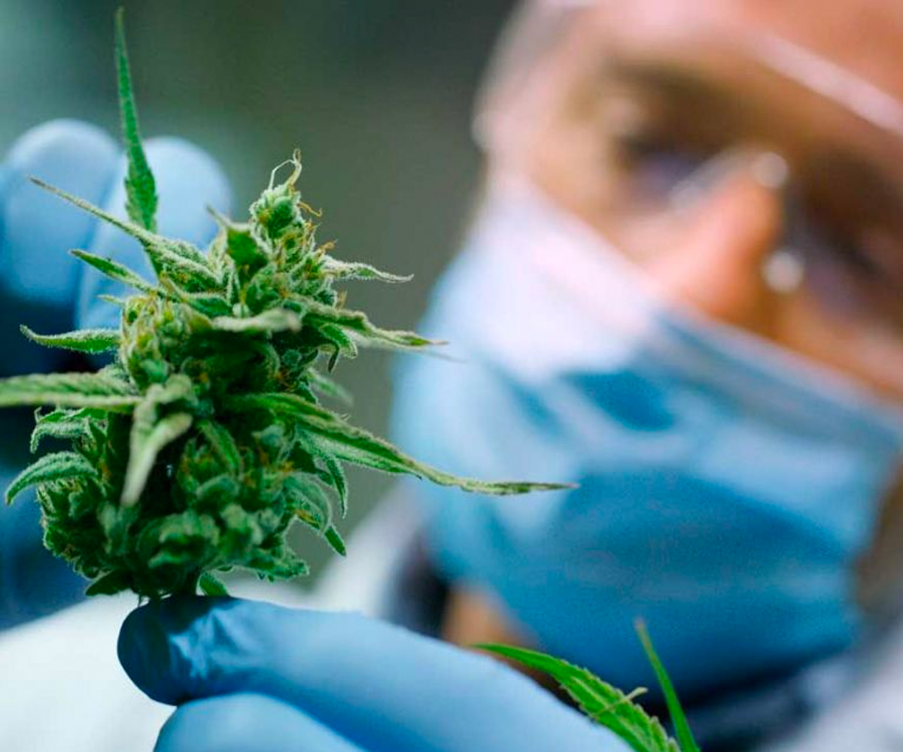
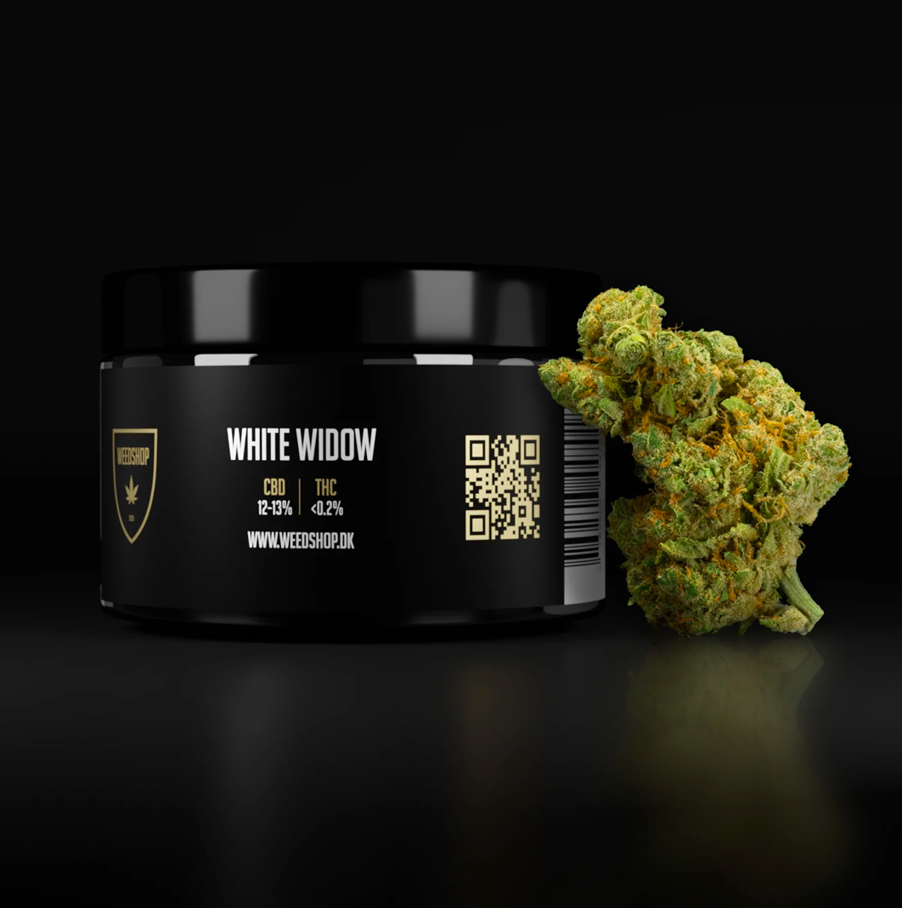
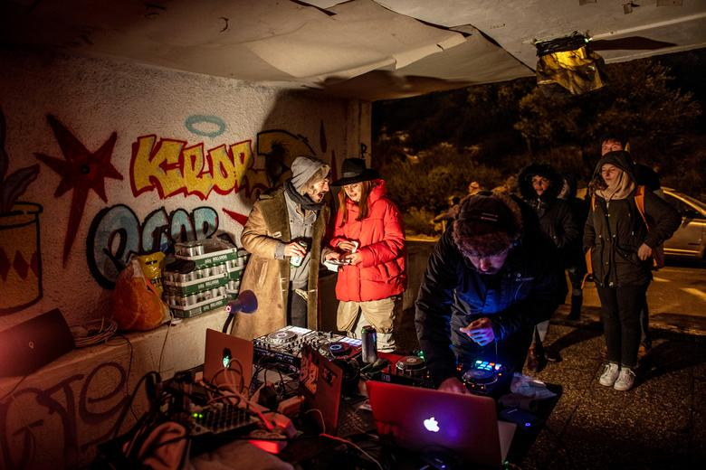

Lovlig weed...
 "White Widow", "Purple Haze",
"White Widow", "Purple Haze",
og "OG Kush".
Navne, der i lang tid har været betegnelser for sorter af det
- i Danmark - ulovlige rusmiddel; Cannabis. Det er det ikke længere! … Ikke kun i hvertfald..!
Idag kan du nemlig købe produkter med samme navne, der både ligner, lugter og ser ud som deres
illegale dobbeltgængere - helt lovligt!
Weed kategoriseres under stofklassen psykadelika, og adskiller sig fra de fleste andre stoffer, ved dens noget selvmodsigende effekt;
Den både fremprovokerer og dæmper din angst. På samme tid… Det gør den hovedsageligt pga. 2 stoffer i planten; THC og CBD. Disse to stoffer
fungerer som en slags Ying og Yang, og er sammen om at give dig den oplevelse du kender som ‘at være skæv’. Gennem årene har bagmænd,
mellemmænd og pushere, forsøgt at fremdyrke planter med den højeste THC-potens, da det overordnet set er den der får dig til at føle dig skæv.


Fra naturens side er der ligevægt af THC og CBD i planten - omkring 15% af hver. Men på det sorte marked findes der nu produkter med helt op til 86% THC.
THC’en, er “the badboy” af de 2 stoffer; den der fremprovokerer angsten i dig, i nogle tilfælde fremprovokerer psykoser og ja; den, der
gør stoffet ulovligt.
Måske netop af den grund, er man nu er man begyndt at dyrke cannabis med det komplet modsatte end-goal; nemlig et lavt THC-indhold,
og højt CBD-indhold. Du bliver ikke skæv af det. I hvert fald ikke på samme måde som af THC - du mærker en afslappethed og en lethed i tankesystemet,
men du får ikke noget ‘noia’ eller ‘tørke’ eller nogle af de andre effekter THC’en giver dig, der (trods deres navne) generelt er grunden til,
at folk ryger.

Så hvorfor har man valgt at fremdyrke CBD-weed? Det er jo ikke ligefrem fordi weed ikke var bredt populært i forevejen…
Måske det var en person, der gerne ville sælge, men ikke ville risikere at komme i fængsel? Svaret vides ikke, men hvis du synes
den nye cannabisvariant lyder som noget for dig - eller du simpelthen bare gerne vil prøve at bestille din ryger lovligt over nettet -
kan du shoppe dit CBD-weed lige nu igennem weedshop.dk
Enjoy❤︎
Læs Også:
Vær på vagt! Dette bliver dansk kokain cuttet med
15/03/2023

5 anbefalelsesværdige events denne måned
13/03/2023
Tallene er her! Dette er danskernes foretrukne rusmidler:
12/03/2023

Rygter om korruption i danske casinoer
12/03/2023

Ex-betjent taler ud: Så meget foregår bag kulisserne
08/03/2023